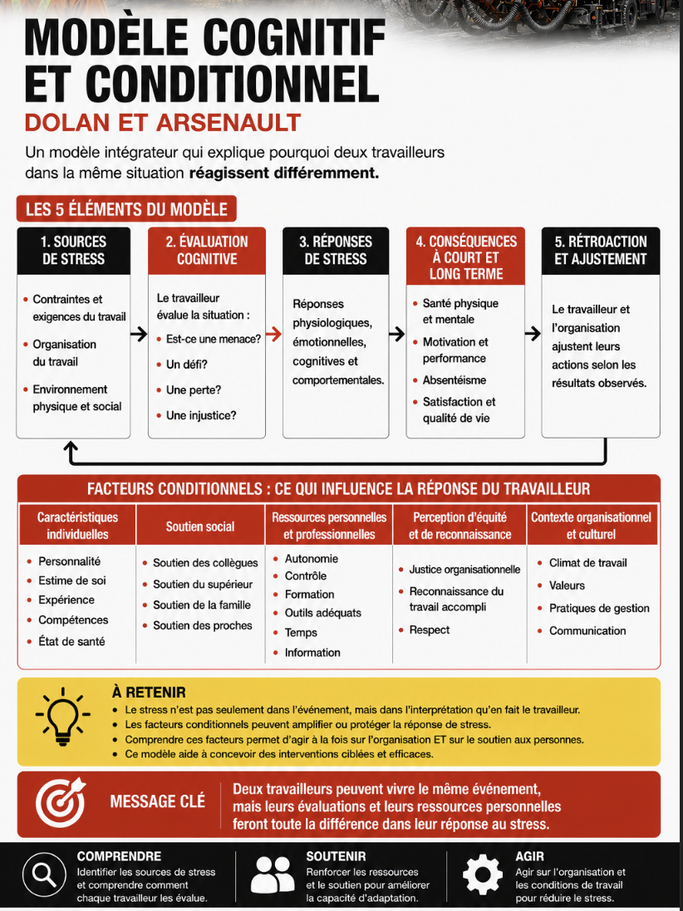
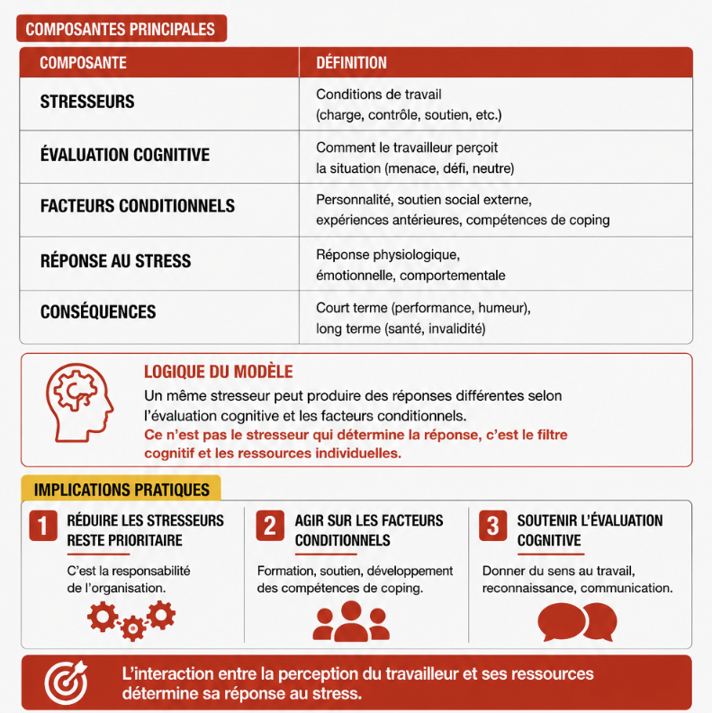
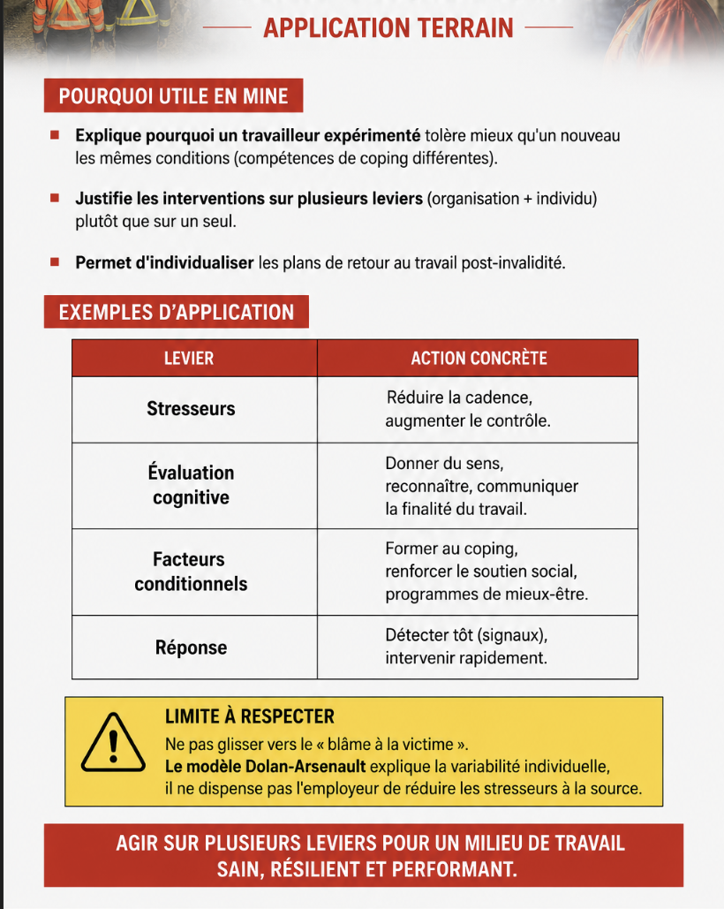

Modèle cognitif et conditionnel de Dolan et Arsenault
Table des matières
L'essentiel : Dolan et Arsenault (chercheurs québécois) ont proposé un modèle qui intègre la perception du travailleur (cognitif) et les facteurs qui modulent sa réponse. Plus complet que Sélye seul, plus applicable que Karasek seul. Permet d'expliquer pourquoi deux travailleurs dans la même situation réagissent différemment.

Toucher l'image pour l'agrandirDéfinition
Modèle cognitif et conditionnel du stress : cadre intégrateur développé par les chercheurs québécois Shimon Dolan et André Arsenault dans les années 1980-2000. Combine les apports physiologiques (Sélye), cognitifs (Lazarus) et organisationnels (Karasek, Siegrist) en un seul modèle utilisable en milieu de travail.
Le modèle

Toucher l'image pour l'agrandirApplication terrain

Toucher l'image pour l'agrandirDocuments et outils
| Document | Type | Source |
|---|---|---|
| Dolan & Arsenault, Stress, estime de soi, santé et travail (2009) | Livre académique | Presses de l'Université du Québec |
| Notes de cours SST1010, modules 3 et 4 | Synthèse | UQAM |
| Articles de recherche Dolan et Arsenault | PDF académiques | Bibliothèques universitaires |
Voir le centre de ressources : 📁 Documents et outils.
Pour aller plus loin
Références
- Dolan, S. L. & Arsenault, A. (2009). Stress, estime de soi, santé et travail (2e éd.). Presses de l'Université du Québec.
- Lazarus, R. S. & Folkman, S. (1984). *Stress, appraisal, and co����������������������������������������������������������������������������������������������������������������������������������������������������������������������������������������������������������������������������������������������������������������������������������������������������������������������������������������������������������������������������������������������������������������������������������������������������������������������������������������������������������������������������������������������������������������������������������������������������������������������������������������������������������������������������������������������������������������������������������������������������������������������������������������������������������������������������������������������������������������������������������������������������������������������������������������������������������������������������������������������������������������������������������������������������������������������������������������������������������������������������������������������������������������������������������������������������������������������������������������������������������������������������������������������������������������������������������������������������������������������������������������������������������������������������������������������������������������������������������������������������������������������������������������������������������������������������������������������������������������������������������������������������������������������������������������������������������������������������������������������������������������������������������������������������������������������������������������������������������������������������������������������������������������������������������������������������������������������������������������������������������������������������������������������������������������������������������������������������������������������������������������������������������������������������������������
Pages qui pointent ici (4)
- 🔤 Index alphabétique des articles SST psychosociale
- Modèle de Sélye, syndrome général d'adaptation SST psychosociale
- Modèles et Théories SST psychosociale
- Modèles et Théories SST psychosociale